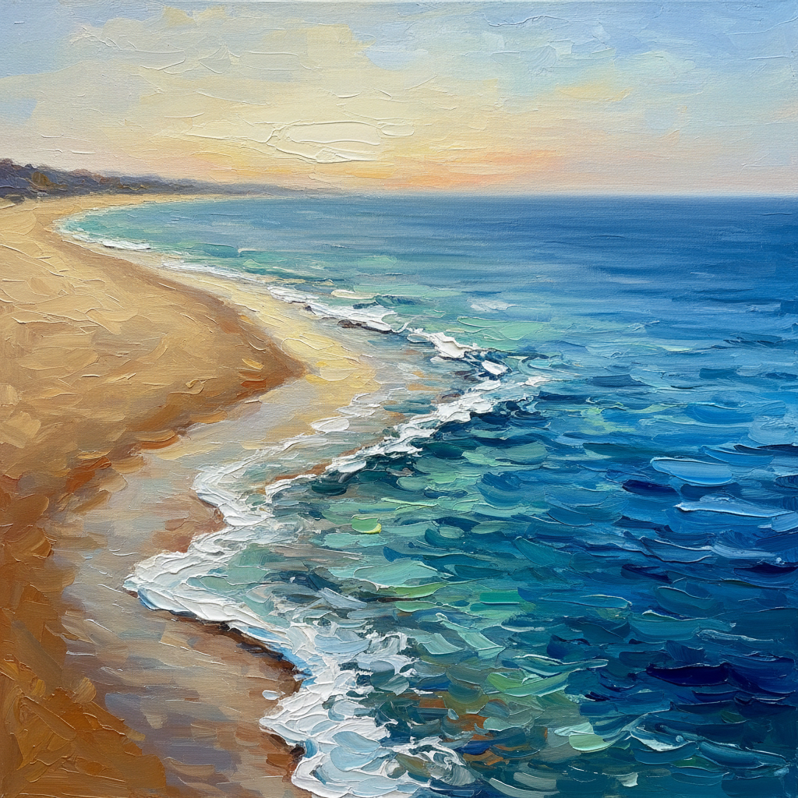

Sabbia

È l'ingresso del mare, della libertà
ha il sapore dell'infinito.
Il numero dei suoi granelli è pari a quello delle stelle
le sue conchiglie sfidano colori e forme
di galassie volteggianti.
ha il sapore dell'infinito.
Il numero dei suoi granelli è pari a quello delle stelle
le sue conchiglie sfidano colori e forme
di galassie volteggianti.
È acqua allo stato solido in lei si può affondare
nasconde ma le impronte da seguire
sa infine rivelare.
nasconde ma le impronte da seguire
sa infine rivelare.
Narra di lontani velieri carichi di forzieri
di tesori zeppi, di viaggi leggendari.
Evidenzia che il Sole è una stella tra le tante
più vicina a noi per colorare azzurri cieli e mari.
di tesori zeppi, di viaggi leggendari.
Evidenzia che il Sole è una stella tra le tante
più vicina a noi per colorare azzurri cieli e mari.
Crea dune nel deserto scolpite a forma d'onde
metafisici luoghi che ricordano lontani mondi.
Evoca l'odore della salsedine sulla pelle
come l'estate della vita portata via dal vento.
metafisici luoghi che ricordano lontani mondi.
Evoca l'odore della salsedine sulla pelle
come l'estate della vita portata via dal vento.
Scivola via lo sguardo
affiancato da percepite meraviglie
e agli angoli degli occhi la preziosità dell'esistenza
è sconvolgente o quasi.
affiancato da percepite meraviglie
e agli angoli degli occhi la preziosità dell'esistenza
è sconvolgente o quasi.
Una clessidra abbandonata,
una civiltà perduta
ricorda lo scorrere del tempo
ch'è forse solo un'illusione
e forse, neanche esiste.
una civiltà perduta
ricorda lo scorrere del tempo
ch'è forse solo un'illusione
e forse, neanche esiste.
Paola Spremulli